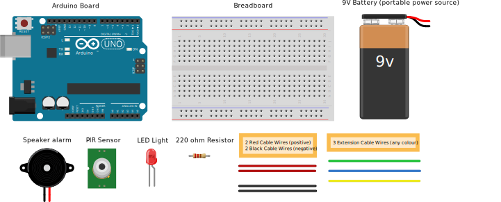
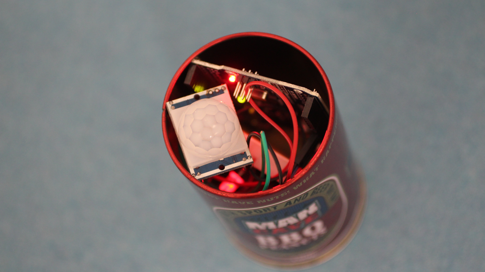

Sensing danger
Have you ever wondered how an automatic door knows when to open?
It’s programmed to of course!
The code tells an electronic circuit board what to do (this is the input) this connects to a motion sensor and the electronic doors, which open and shut when movement is detected (this is the output).
Now you can control a motion sensor, alarm and red light to guard your treasure!
Code the arduino programme to control a noisy alarm and red warning light to switch on when movement nearby is detected!
Make a burglar alarm
This is a simple tutorial where you will learn to create a burglar alarm! It will start beeping when someone is nearby, and stop if nobody is around.
What do I need?
Make sure you have the Arduino software installed. Click here to learn how.
You need the following items to make you burglar alarm:
- 1 x Arduino board
- 1 x large breadboard
- 1 x PIR sensor
- 1 x speaker alarm
- 2 x short red wires
- 2 x short black wires
- 3 x long extension wires (only has a pin on one end of the wire)
- 1 x resistor (220 ohm rating)
- 1 x LED (any colour)
- 1 x mini-USB cable
- 1 x 9V battery
- 1 x battery power cable
Put all the items inside a box so you don't lose anything. Once you have done that, you are then ready for Stage 1!